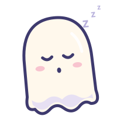

<!doctype html><meta charset="utf-8"><title>Spook sheet</title>
<style>body{margin:0;background:#2B2850;display:flex;flex-wrap:wrap;gap:24px;padding:24px;font:600 14px ui-rounded,system-ui;color:#E4DEF4}
figure{margin:0;background:#3A3668;border-radius:16px;padding:16px;text-align:center}img{width:200px;display:block}</style>
<figure><figcaption>idle</figcaption></figure>
<figure style="position:relative"><figcaption>focus + notes</figcaption></figure>
<figure><figcaption>break</figcaption></figure>
<figure><figcaption>sleep</figcaption></figure>
